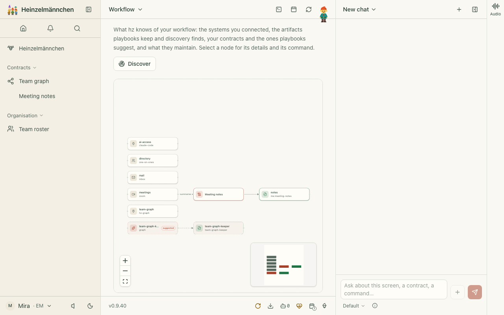
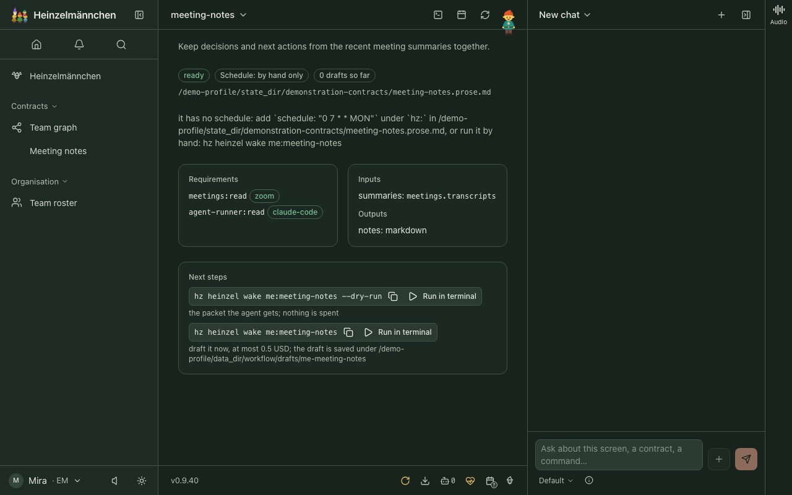
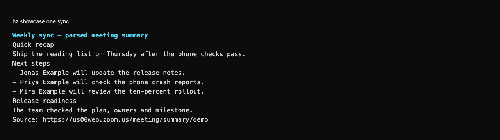
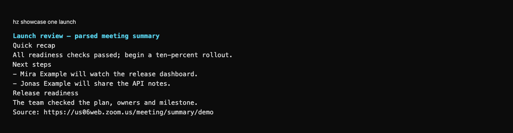
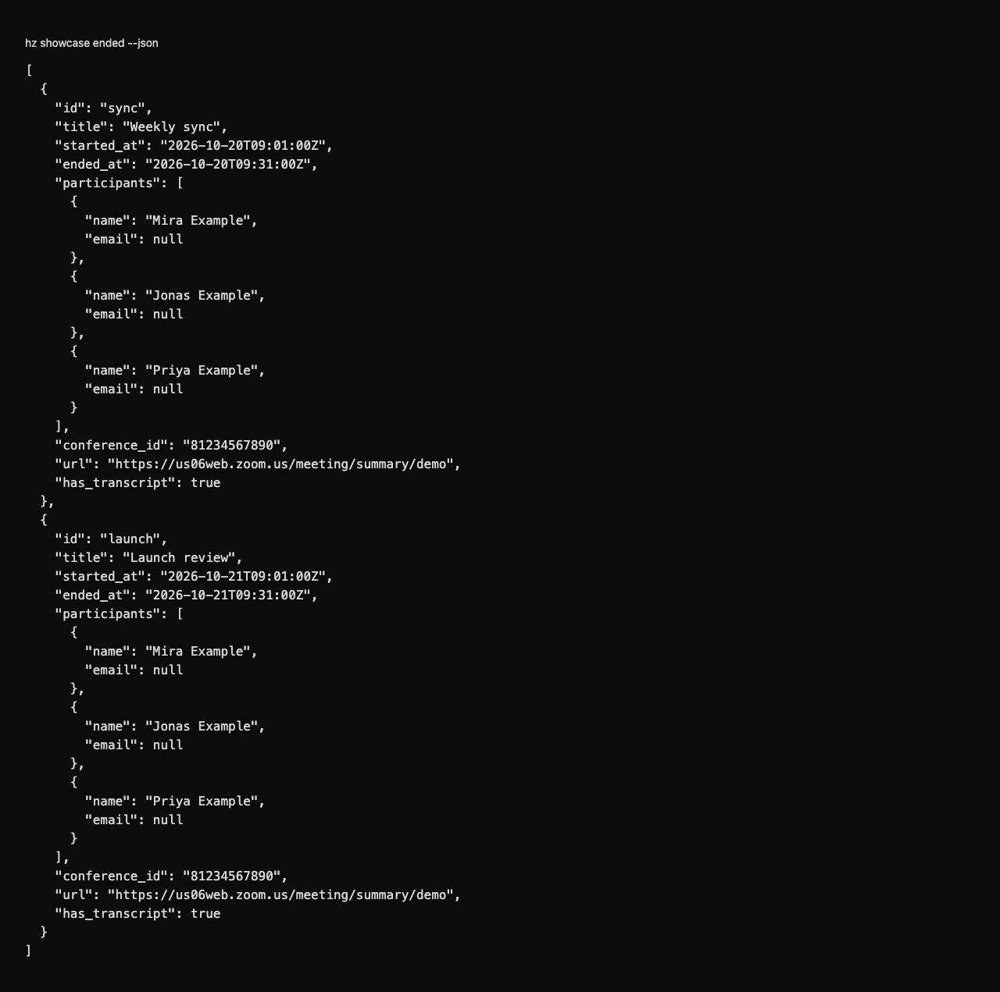

heinzel-zoom
Isolated demonstration profile · Core 0.9.40 · Review these captures before committing. Click an image to inspect it at full size.

UI · Demo data: the fictional Meeting notes workflow declares a need for meeting summaries.
UI · Demo data: the fictional Meeting notes contract declares summary input and Markdown output; no report has been generated.
CLI · Demo data: the fixture requester shows Weekly sync's parsed recap, next steps and source link.
CLI · Demo data: the fixture requester shows Launch review's rollout decision and named next steps.
CLI · Demo data: fictional October meetings as JSON, with meeting metadata rather than verbatim transcripts.